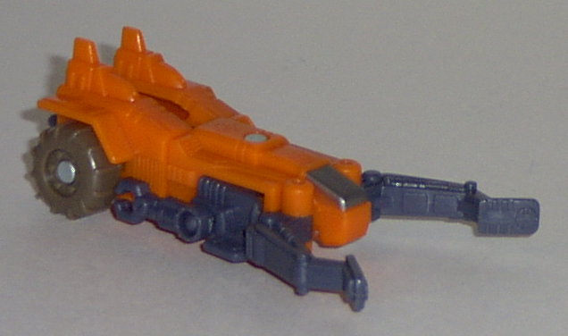
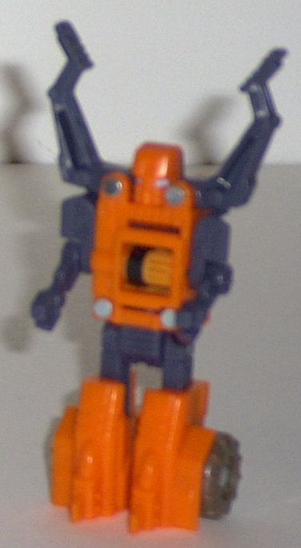
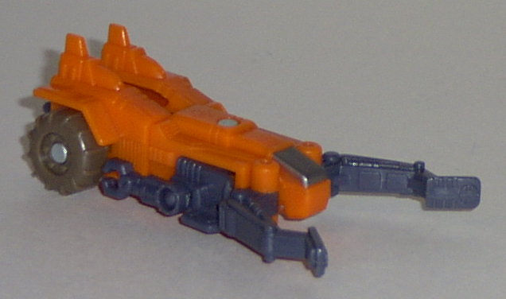
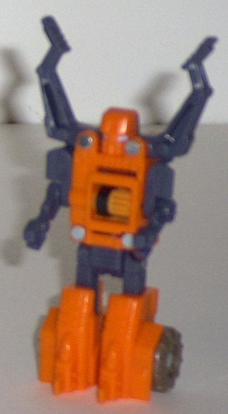
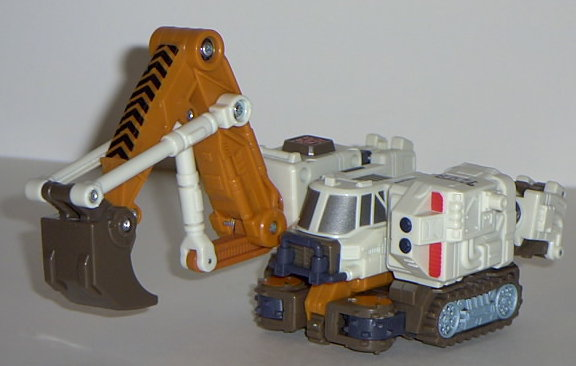
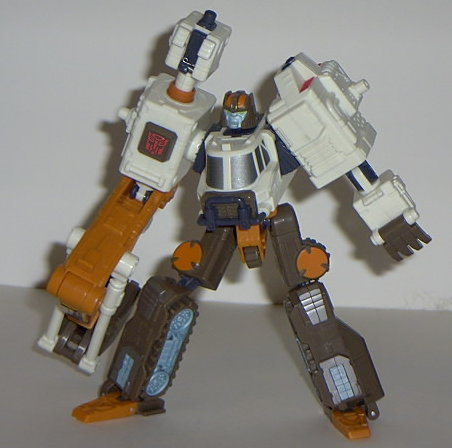
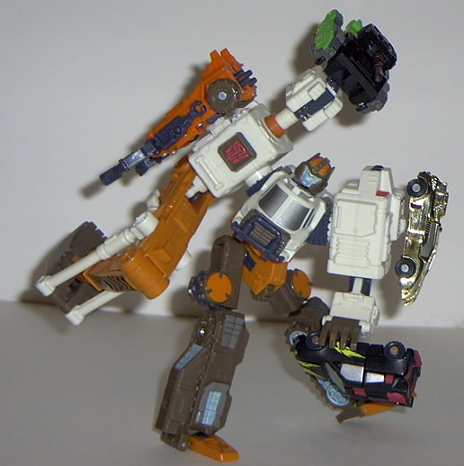

Refute
Refute
 
Allegiance : Minicon
Size : Mini-Con
Difficulty of Transformation : Very Easy
Color Scheme : Bright orange, blue-gray, and some light brown, dull orange, and metallic blue-silver
Rating : 4.4
Refute


Allegiance
: Minicon
Size
: Mini-Con
Difficulty of Transformation
: Very
Easy
Color Scheme
: Bright orange, blue-gray,
and some light brown, dull orange, and metallic blue-silver
Rating
: 4.4
Vehicle mode is some
kind of futuristic mining vehicle. To be honest, though, it only really
manages to look like... something... with a cockpit, wheels, and two prongs
at the front. Not toe most impressive vehicle mode, to be sure. Although
Refute has pretty good mold detailing, he has practically no paint detailing
at all- only his cockpit window and his robot eyes are painted. The orange
could also stand to be a shade or two darker, although it's not that bad.
Also, his robot arms are very clearly visible on the sides in this mode-
they didn't even TRY to hide them. On the upside, though, Refute has a
pretty cool gimmick- he's another one of those geared Minicons. Roll him
along on a flat surface (or attach him to the bottom of
Cyclonus
),
and his prongs move in and out. And they move a sizable distance, too,
so it's not super-lame or anything like that. His Minicon symbol is on
the center of the top of this mode, and the Minicon port is on the bottom,
slightly to the rear of center.
Refute's robot mode
also leaves something to be desired. It's very odd in its stature, and
the arms are really puny- those claws look like something out of Roley
Poley Olie. The head is also very odd-looking, as it's almost square, and
the mouth looks like some odd kind of owl beak or something. The forehead
is also a bit too large. The legs themselves are a bit wonky, since the
feet are too bit, but it's nothing I can't get past. The prongs on Refute's
shoulders also accent the mode a little, too, giving it at least SOME personality.
Refute has about average articulation for a Minicon- he can move at the
shoulders, waist, and hips.
Refute is really a pretty
boring Minicon in every respect except his gear gimmick. An uninventive
transformation, an odd stature in his robot mode, and practically no paint
detailing. Certainly a below-average Minicon.
 Hoist
Hoist



Allegiance
: Autobot
Size
: Super-Con
Difficulty of Transformation
: Easy
Color Scheme
: Off-white, light brown,
dull orange, blue-gray, and some pale light blue, silver, black, bright
red, metallic blue-silver, and light green
Powerlinx ports
: 4 (1 gimmicked)
Rating
: 9.4
Vehicle mode is some
kind of futuristic shoveler construction vehicle. Anyways, it looks pretty
nice, all around. Excellent mold and paint detailing, with a great variety
of colors. The Autobot symbol is painted on nice and cleanly- no big red
blob of paint here. There's also "S.D. 74" printed on the top of the vehicle
to give it a bit of a realistic touch. The top half of the vehicle mode
can also swivel independently from the bottom half, allowing Hoist to turn
as he scoops. As for the Minicon gimmick, it obviously involves his shovel-
unfortunately, you actually have to do more work to get the gimmick ready
for a Minicon to unlock it than to just do it manually! See, what's supposed
to happen is that you attach a Minicon to the port at the rear of the crane
arm, then push in to have the crane scoop up stuff. However, you can actually
accomplish the same thing just by pushing in on the rear of the arm with
your finger. To actually get it where the Minicon is required to activate
the gimmick, you have to first pull up on a spring-loaded blue lever, lock
it in place, and THEN use the Minicon to unlock the lever! Completely redundant
and ridiculous, even if the gimmick itself is pretty cool. Also, Hoist
has a couple of somewhat obvious robot extras in this mode- his fingers
on the back of the left side of the crane; the robot head from a rear view;
and the thumb on the underside of the crane arm. Still, all-in-all, it's
a pretty nice mode.
Hoist's robot mode,
however, is so awesome you'll swear the being who designed this was Primus
himself. I mean, it's PERFECT. Nothing wrong with it at all. First off,
he's got the most articulation out of ANY Armada toy, with the sole exception
of
Unicron
- any point of his body within reason
can move. He's also very stable. His face also looks very gruff and mean-looking,
and has good paint detailing on it. The comparison between his huge crane
arm and his rather normal-looking left arm is great, and really adds character.
And the fact that there's a Powerlinx port in the palm of his hand- effectively
allowing him to hold Minicons- is INGENIOUS. Some may complain about the
small gap of space in between his feet and the rest of the legs, but I
personally don't mind him, as it's not noticeable from most angles, and
it allows him to take more dynamic stances anyways.
Hoist has a pretty good
vehicle mode, although it does have a few robot extras. But his robot mode
will blow you away, guaranteed. The best Armada Super-Con of them all,
and that's not an easy task. Highly recommended.
No Stats
Review by Beastbot